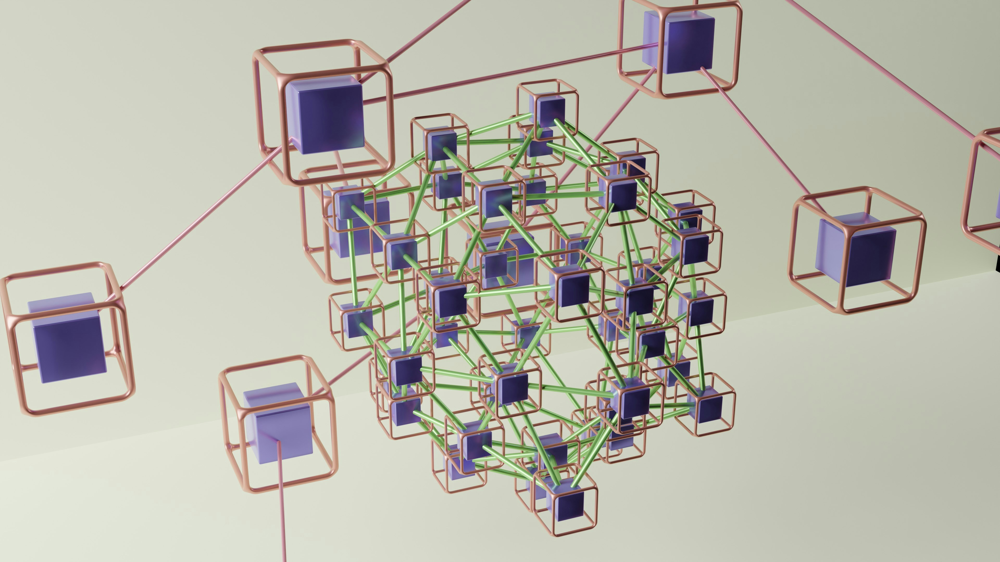
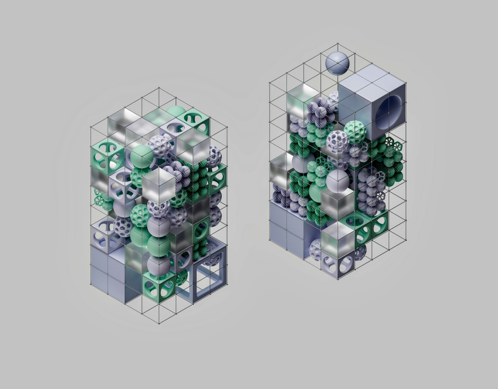
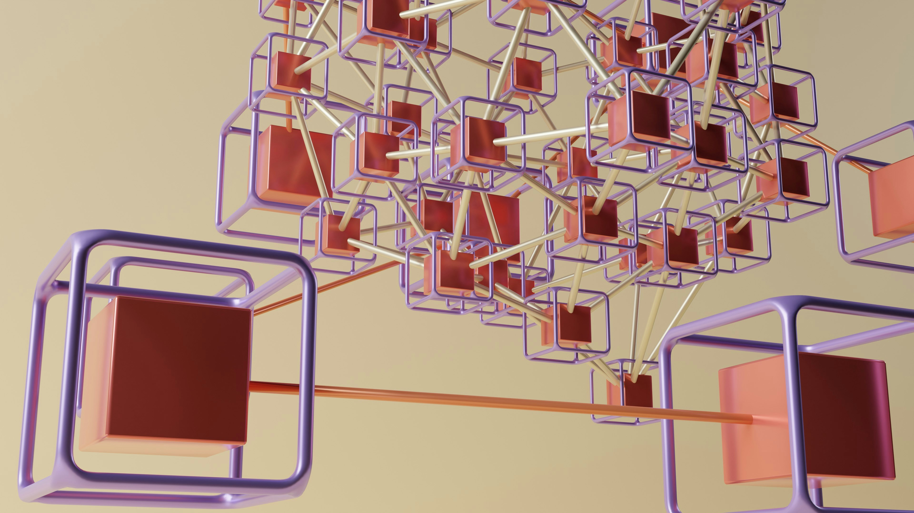
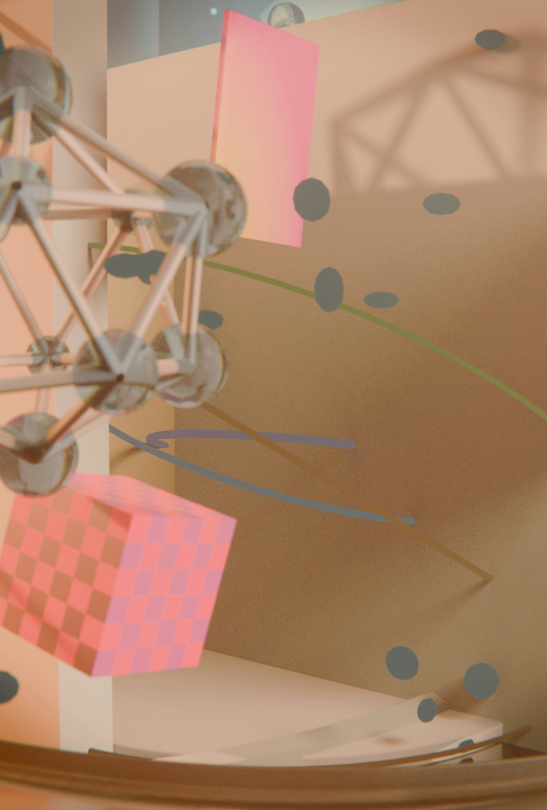
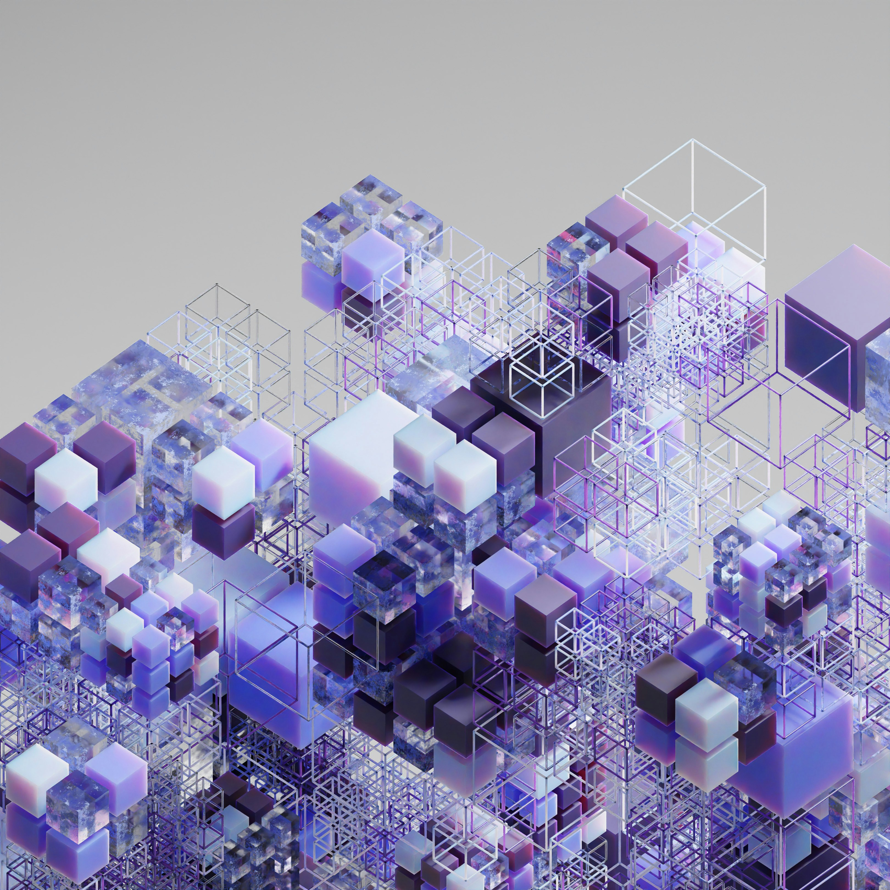
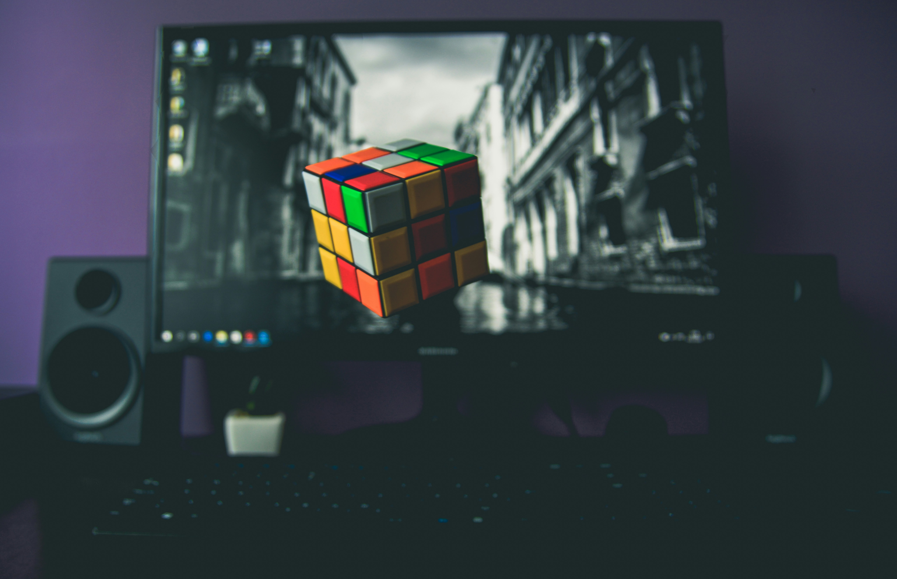

End-to-end 3D Cuboid Labeling
Services for Depth-Driven Perception
3D cuboid labeling services support both 2D and 3D data to improve depth perception and object recognition. Accurate cuboid geometry strengthens tracking and spatial understanding.

3D Cuboid Annotation
Define object volume and orientation for highly accurate and robust spatial modeling and real-world positioning.

LiDAR Point Labeling
Annotate 3D depth data to support advanced autonomous navigation and obstacle detection workflows.

Multi-Sensor Mapping
Apply cuboids across synchronized camera, LiDAR, and radar sources for cohesive perception pipelines.

Occlusion Management
Interpret partial or obstructed objects to maintain consistent cuboid placement in complex scenes.

Class-Specific Labels
Assign semantic categories to 3D objects for improved classification and scene understanding.

High-Resolution Annotation
Label detailed environments with precise cuboid geometry for advanced robotics and industrial AI.

Temporal Cuboid Consistency
Maintain cuboid alignment and geometry consistency across sequential frames to support tracking.

Quality-Checked Spatial Datasets
Deliver benchmark datasets with rigorous multi-layer QC to support model training and validation.